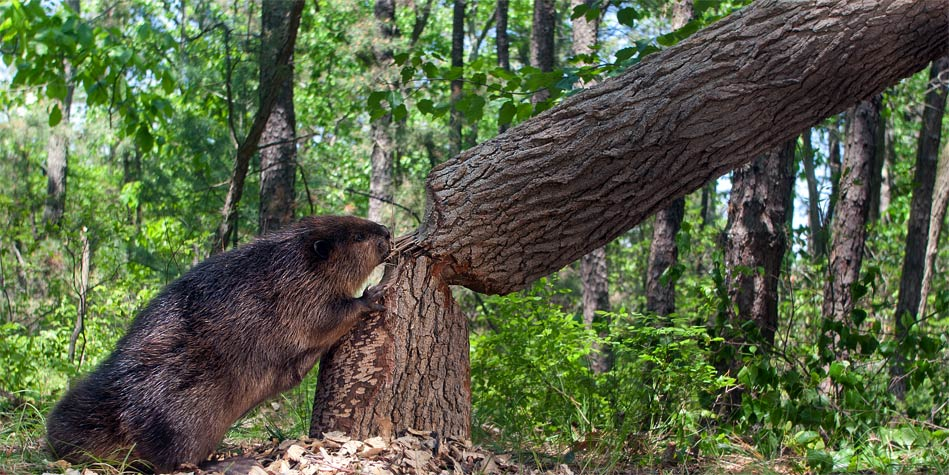

Castor fiber – największy gryzoń Europy i genialny hydrotechnik.

Bobry to jedne z niewielu zwierząt (poza ludźmi), które potrafią celowo modyfikować środowisko, aby dostosować je do swoich potrzeb. Budując tamy, tworzą mokradła, które zatrzymują wodę i zwiększają różnorodność biologiczną.
Tyle może ważyć dorosły osobnik
Potrafi wytrzymać pod wodą
Zęby bobra rosną przez całe życie
"Bóbr to nie tylko zwierzę, to system zarządzania zasobami wodnymi w futrze."
W Polsce bobry są pod ochroną częściową. Możesz je spotkać nad rzekami, jeziorami i w rowach melioracyjnych (często ku irytacji rolników). Jeśli zobaczysz ścięte drzewa w kształcie "ołówka" – wiesz, że tam są!